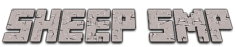
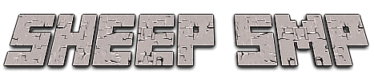
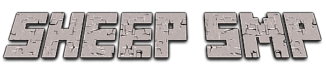
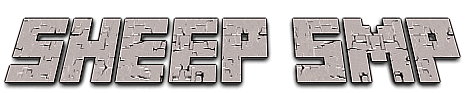

For those of you who don't know, Sheep SMP is a Minecraft SMP(Survival Multiplayer) server. Skycam's goal in creating and maintaining Sheep SMP is to provide a small, safe whitelist only environment for himself and his friends. The server routinely provides basic permissions to its users, such as player to player teleport and fly. To join Sheep SMP, you must play Minecraft regularly, be good friends with Skycam and be able to be trusted as Sheep SMP has no grief protection below being banned.